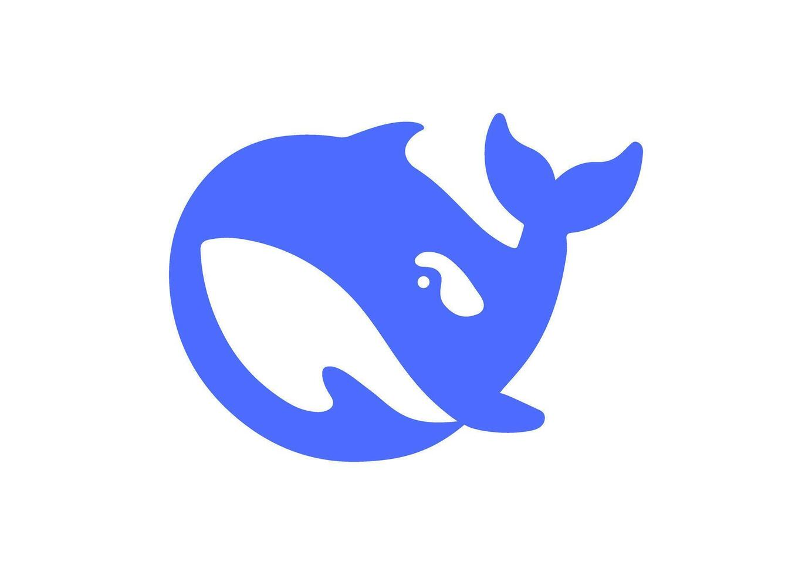

DeepSeek AI
DeepSeek
AI — это нейросеть (искусственный интеллект), предназначенная для генерации текста, анализа информации и написания кода.
🎯 Основное применение
- Решение задач по логике и математике
- Написание и отладка кода
- Доступность: часто бесплатна или дешевле конкурентов
💡 Совет
DeepSeek — лучше для кода и логических задач.
Плюсы и минусы
✅ Плюсы
- Хорошо решает задачи по логике и математике
- Сильна в программировании и написании кода
- Часто доступна бесплатно или дешевле конкурентов
❌ Минусы
- Может выдавать неверную информацию (ошибаться)
- Иногда хуже справляется с творческими текстами
- Есть вопросы по конфиденциальности при использовании облачной версии
💻 Программирование
Математика
📐 Логика
Анализ